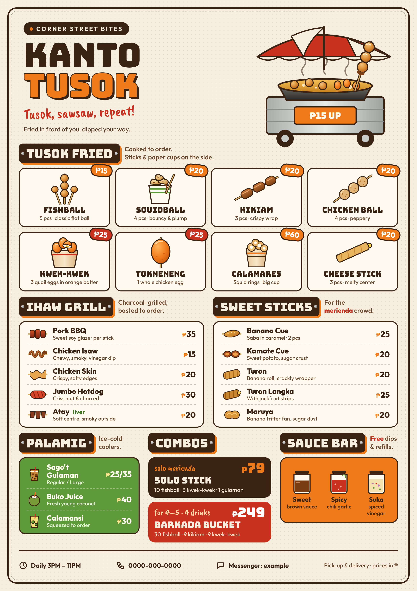
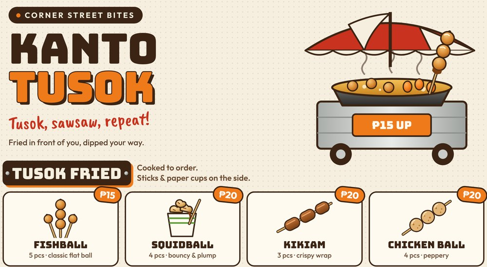
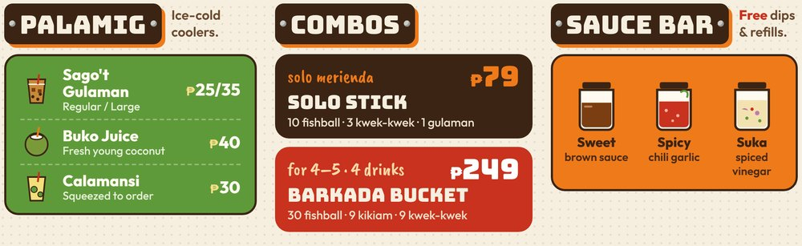

A chunky signage headline next to a hand-drawn steel cart, so the stall reads as street food from across the road.

Combos and free sauces sit together at the bottom, making the add-on and sharing options easy to spot.